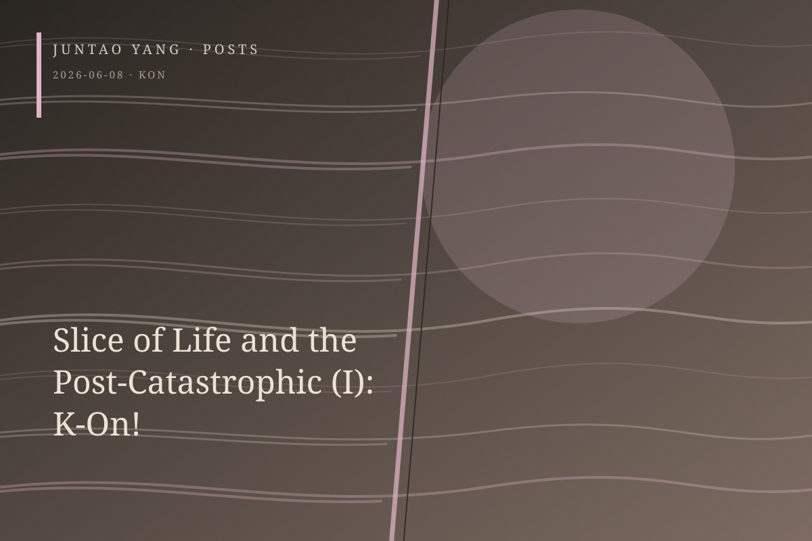

<content>
As an aesthetic form, the genealogy of nichijō-kei, or the slice-of-life genre, is post-catastrophic. At the level of metaphor, the “air” in kūki-kei, the “air-type” genre, resembles what remains after something has been evacuated. In one sense this is self-evident. The everyday, precisely because it is already here, does not ordinarily become an object of contemplation unless it has ceased to be self-evident.
Scholars have amply demonstrated how the rise of nichijō-kei works between 2006 and 2011 was embedded in the long aftermath of Japan’s Lost Decades. Grand narratives burst into bubbles, while protracted economic stagnation drove dramatic art premised on breathless advance toward its dialectical inversion: modes of storytelling organized around the refusal of conflict and climax. Stimulation had become all too ordinary; people wanted its opposite. When 3/11 arrived as a catastrophe far beyond the human scale, “recovering the everyday” was repeatedly appropriated as a keyword of public discourse. Within this structure, the everyday was no longer simply an object of representation. It became something to be mourned, repaired, and ritually reenacted.
Hakoniwa-kei, the miniature-garden genre that I will explore in a later essay, is more specific. It builds a carefully enclosed world, a bounded space dense with interpersonal relations. With the movement from intangible diffusion to tangible condensation, the everyday acquires ritual meaning inside boxlike walls. The careful enclosure performed by hakoniwa-kei identifies, maps, and seals outside the diffuse sense of loss that kūki-kei cannot or refuses to name. Beneath the shadow cast by an unnamed threat, people accept that they cannot repair the whole world. Within a limited space, however, they can use the miniature rituals of cooking, camping, or wine tasting to reconstruct an order that feels manageable, safe, and meaningful.
K-On! is, of course, one of the most important works of nichijō-kei, and it also functions as a prototype of hakoniwa-kei. Its antidramatic structure seems to contain no explicit threat or intruder. Yet the work’s very purity discloses its post-catastrophic structure: from its first second, it is governed by an irreversible countdown toward graduation. This fact conceals itself faintly until “Tenshi ni Fureta yo!” The formal cost of the luxury of wasting time appears as an almost phenomenological inventory: close-ups of legs, hands, and objects; doors, flowers, leaves, and branches; repeated studies of shifting light and shadow in the corridor. We catalogue things because we know they will disappear. Cataloguing is therefore a form of mourning paid in advance.
Establishing shots are strikingly scarce. The gaze remains low, near the height of table legs and ankles, pressed against the texture of the everyday from within and trying to retain a little more of it before it slips through our fingers. Liminal space becomes the synecdoche of fragile time. Inside the light music club’s small room, a protected temporality that loops as if without end and permits ceaseless return is finally forced to confront its destruction. Or perhaps temporality exempts itself by becoming the wound.
The radical force of K-On! lies in its recognition that disaster does not require an earthquake or an economic bubble. The ordinary passage of time is already catastrophic. The everyday, simply by unfolding, moves automatically toward its own end.
</content>
June 8, 2026
Slice of Life and the Post-Catastrophic (I): K-On!
K-On! reveals the post-catastrophic structure of slice-of-life anime: everyday life becomes visible because its disappearance has already begun.
